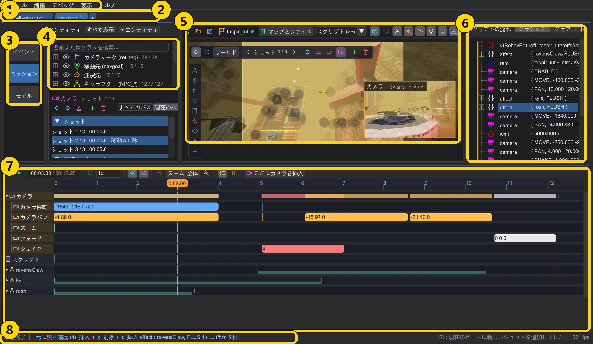

はじめに
ウィンドウ
ウィンドウは 1 つ、モードは 3 つ。左のモードバーで大きな領域の表示を切り替えます。スクリプト・マップ・タイムラインは常に連動しています。

各部分#
| 部分 | 役割 |
|---|---|
| メニューバー | ファイル・編集・デバッグ・表示・ヘルプ。開く・保存、ゲームフォルダー、外観と言語、このガイド。 |
| スクリプトタブ | 開いているスクリプトごとに 1 つのタブ。* は未保存の変更、+ で新しいスクリプト、ドラッグで並べ替えられます。同じミッションのタブはマップとカメラを共有します。 |
| モードバー | 左端の帯。イベント(スクリプト作成)、マップ(3D マップ)、モデル(キャラクターモデルの表示)。 |
| 左の列 | モードによって、コマンド一覧、マップのエンティティとインスペクター、モデルのアニメーション一覧のいずれかになります。 |
| スクリプトの流れ | スクリプトそのもの。ツリー(クラシック)、グラフ(グラフ)、時間軸(トラック)で表示します。スクリプトの流れ:クラシック・グラフ・トラック を参照。 |
| 操作 | 右のボタン列。オリジナルと同じく編集・ファイル・ツリー設定・コンパイル！ があります。マップモードではマップに場所を譲ります。 |
| タイムライン | マップの下。シーンを再生し、各コマンドの時刻を示します。タイムライン を参照。 |
| ステータス行 | メッセージ、エラーと注意の件数(クリックで一覧)、元に戻す履歴、最後にコンパイルした時刻。 |
2 つのスクリプトを並べる#
ファイル → 分割表示 で、イベントモードでは最大 4 つのスクリプトを並べて表示できます。比較やコマンドのコピーに便利です。ペイン間でコマンドをドラッグするとコピーされ、ペインをクリックするとそこで作業できます。
サイズ・外観・レイアウト#
- Ctrl + マウスホイールでインターフェース全体を拡大縮小(50〜300 %)。表示 → UI の拡大率 でも同じです。
- 表示 → テーマ:BehavEd クラシック・Windows・ダーク・ミッドナイト・ライト・ハイコントラスト。
- 列の境界をドラッグして幅を変えられ、モードごとに記憶されます。デバッグ → レイアウトを戻す で元に戻します。
- BehavEd-Remake の起動中にエクスプローラーでファイルを開くと、2 つ目を起動せず、開いているウィンドウに渡されます。